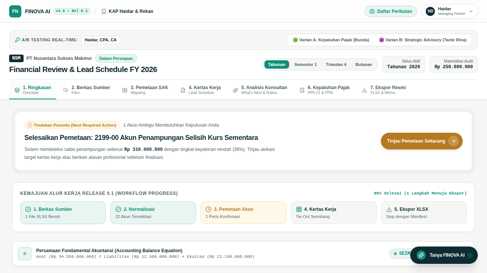
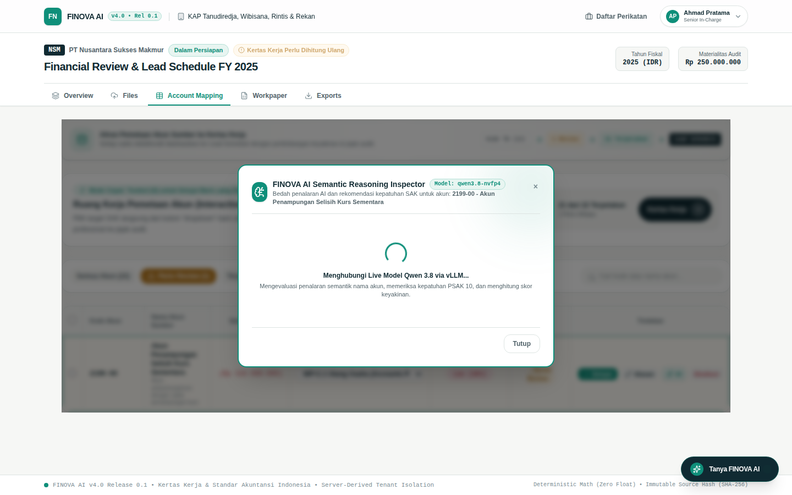
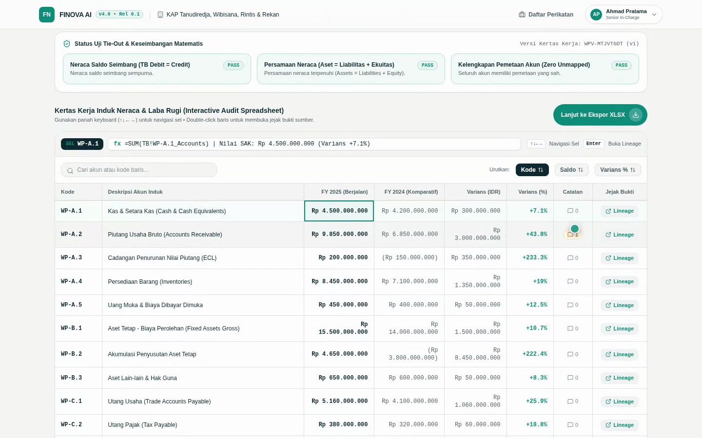
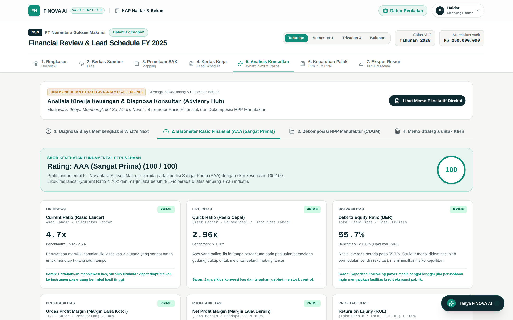
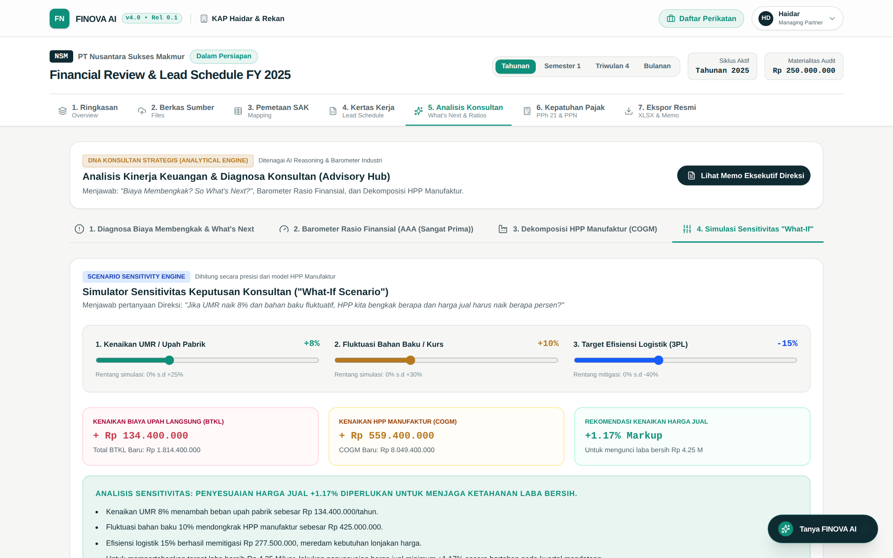
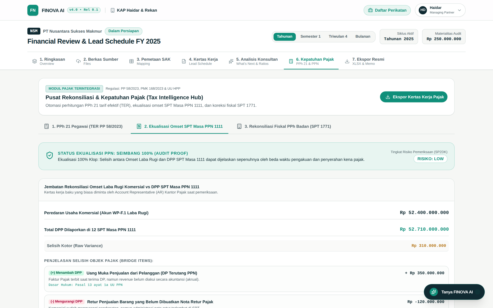
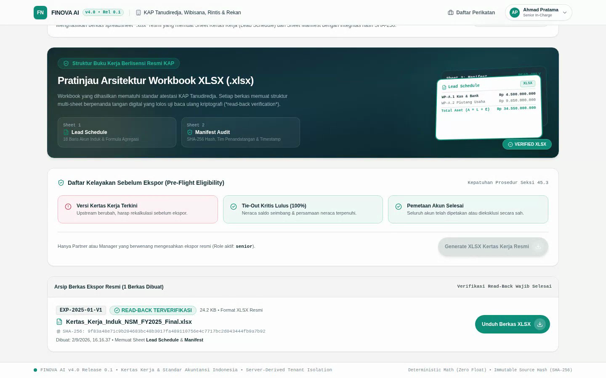

KAP Haidar & Rekan • Release 0.1 Production
Otomasi atestasi Kantor Akuntan Publik (KAP), kepatuhan pajak resmi DJP (PPh 21 TER & PPN 1111), dan simulator keputusan strategis Direksi ("What-If Sensitivity").
Mengapa akuntan dan konsultan sering lembur berhari-hari tapi tetap rawan denda pajak?
Tiap klien mengirimkan rekap gaji dan Neraca Saldo (Trial Balance) dengan format berbeda: ada yang meletakkan kode akun di kolom B, ada yang tunjangan di kolom F. Junior auditor habis waktu 3-4 hari cuma untuk merapikan dan *copy-paste* data secara manual.
Aturan tarif efektif rata-rata (TER PP 58/2023) membagi tarif ke Kategori A, B, C dengan rekonsiliasi Pasal 17 di masa Desember. Salah sedikit, kantor pajak mengirim SP2DK karena selisih omset PPN vs PPh Badan.
Saat biaya logistik naik 44.5% dan Direksi bertanya: "Berapa harga jual produk yang harus dinaikkan jika UMR naik 8%?", akuntan biasanya gagap karena tidak memiliki kalkulator simulasi sensitivitas bisnis.
Akuntan kelelahan mengurus formula Excel ketimbang memberikan nasihat bisnis.
Selisih 1 Rupiah pun membuat opini audit tidak bisa diterbitkan.
Bukan sekadar Chatbot AI generik, dan bukan sekadar software kasir ERP.
FINOVA adalah Sistem Operasi Kertas Kerja Audit & Konsultasi Finansial (Audit & Advisory Operating System) yang mengubah berkas Excel mentah dari klien menjadi paket Kertas Kerja Induk (Lead Schedule) SAK berlisensi resmi, perhitungan pajak terverifikasi DJP, dan simulator keputusan bisnis bagi Direksi.
Ekstraksi berkas sumber, pemetaan ribuan akun, hingga jembatan rekonsiliasi selesai dalam hitungan menit.
Menggunakan kalkulasi fixed-point desimal murni tanpa floating point error yang lazim terjadi di Excel.
1. Tax Compliance Engine: Menangani PPh 21 TER, SPT Masa PPN 1111, dan SPT Tahunan 1771.
2. Strategic Advisory Engine: Menangani Diagnosa Anomali Biaya, Rasio AAA, dan Simulator "What-If".

Dari berkas mentah klien hingga laporan audit resmi berpenanda tangan digital.
Konfigurasi nama KAP, izin KMK, materialitas audit, dan hak akses tim auditor.
Unggah file Excel Neraca Saldo (Trial Balance). Verifikasi integritas hash SHA-256.
AI memetakan ribuan akun ke 18 pos laporan keuangan dengan skor keyakinan.
Uji keseimbangan neraca (Aset = Liabilitas + Ekuitas) dan grafik waterfall laba rugi.
Diagnosa anomali biaya (+44.5%), rasio finansial AAA, dan simulasi "What-If" kenaikan UMR.
PPh 21 TER, Smart Payroll Importer, ekualisasi omset PPN 1111, dan rekonsiliasi SPT 1771.
Unduh workbook Excel multi-sheet formula hidup dan file CSV titik koma siap impor DJP.
Memastikan setiap perikatan mematuhi izin regulasi Kementerian Keuangan & IAPI.
Seluruh metadata KAP terpasang permanen pada header ekspor XLSX dan hash manifest audit trail.
Menara Finansial Indonesia Lt. 18, Jakarta Selatan
Menerima lembar kerja Excel mentah dari klien tanpa perlu merapikan kolom secara manual.
PT Nusantara Sukses Makmur • Berkas: TB_PT_Nusantara_Sukses_Makmur_FY2026.xlsx • 23 Akun Induk • Nilai Aset Rp 34,55 Miliar (100% Valid).
AI memahami konteks bisnis akun, bukan sekadar mencocokkan kata kunci secara kaku.
Dari rata-rata 6 jam manual mapping per klien menjadi hanya 45 detik dengan AI Semantic Engine.

Fondasi utama atestasi opini wajar tanpa pengecualian (WTP) oleh Partner Audit.
Aset = Liabilitas + Ekuitas (Rp 34,55 M = Rp 12,36 M + Rp 22,19 M).Semua 3 uji matematis (Balance Sheet Equation, Profit & Loss Aggregation, Opening Balance Tie-Out) lulus 100% tanpa selisih 1 rupiah pun.

Mengubah akuntan dari sekadar pencatat buku menjadi penasihat strategis papan atas bagi Direksi.
Mendeteksi lonjakan beban logistik (+44.5% / Rp 1,42 M) yang melebihi batas toleransi. Memberikan 3 rekomendasi taktis (konsolidasi armada 3PL, audit rute gudang, SOP surat jalan) dengan potensi penghematan Rp 485 Juta.
Evaluasi komprehensif 9 rasio: Current Ratio (2.42x), Quick Ratio (1.81x), Debt to Equity (0.56x), Net Profit Margin (9.44%), dan ROE (19.15%) dengan benchmark industri manufaktur.
Mengurai 3 unsur biaya pabrik: Bahan Baku Langsung (Rp 18,2 M), Upah Tenaga Kerja Langsung / BTKL (Rp 8,4 M), dan Biaya Overhead Pabrik / BOP (Rp 4,9 M).

Menjawab pertanyaan Direktur: "Jika UMR naik dan bahan baku fluktuatif, kita harus apa?"
Saat meeting dengan Direksi, Tante Rina bisa menggeser 3 slider interaktif secara langsung di layar proyektor / iPad:
Dampak langsung: Beban BTKL membengkak +Rp 134.400.000.
Dampak langsung: HPP Manufaktur (COGM) naik +Rp 498.000.000.
Kenaikan harga jual 1.17% cukup untuk mengunci laba bersih perusahaan tetap aman di angka Rp 4,25 Miliar.

Solusi tuntas PPh 21 TER, Ekualisasi PPN 1111 anti-SP2DK, dan Rekonsiliasi SPT 1771.
Menghitung otomatis potongan PPh 21 bulanan berdasarkan PTKP (TK/0, K/1, K/2) menggunakan Kategori A, B, C, serta penyesuaian rekonsiliasi Pasal 17 di masa Desember.
Bunda tidak perlu memaksa klien memakai template tertentu. AI mengenali kolom nama (misal "Employee", "Karyawan"), gaji ("Gapok", "Upah"), dan status kawin secara otomatis.
Menjembatani perbedaan omset SPT PPN (Rp 44,2 M) vs Laporan Laba Rugi (Rp 45 M) dengan selisih uang muka dan retur sampai tidak ada selisih yang bisa dipermasalahkan fiskus pajak.
Koreksi fiskal positif (natura, beban representasi) dan negatif hingga menghasilkan PPh Pasal 29 Kurang Bayar Rp 1,55 Miliar.

Bukan sekadar tampilan di layar, semua berkas siap diunduh dan digunakan di dunia nyata.
Bukan data statis hasil copy-paste. Workbook berisi multi-sheet (Cover, Lead Schedule, Mapping Master, Audit Trail) dengan rumus Excel asli (SUM, VLOOKUP) dan tanda tangan digital SHA-256.
Berkas CSV bertanda pemisah titik koma (;) yang sesuai dengan format skema DJP Online. Bunda tinggal upload ke portal e-Bupot 21 tanpa perlu convert manual.
Daftar rekap faktur pajak dengan header resmi (FK;...) siap impor ke aplikasi e-Faktur Desktop / Web DJP.

Dirancang tanpa gesekan bagi penguji senior, namun aman dengan standar perbankan.
Data klien PT Nusantara tidak akan pernah bocor ke perikatan lain karena diproteksi server-derived tenant boundary.
Tante Rina & Bunda tidak akan pernah dihadang layar login wall saat mengklik link WhatsApp perikatan.
| Pengguna | VIP Access Key | Email Login | Peran & Halaman Langsung |
|---|---|---|---|
| Tante Rina | FINOVA-RINA-CFO |
rina@kap.id |
Senior Advisory Partner • Tab 5 Advisory |
| Bunda | FINOVA-BUNDA-TAX |
bunda@kap.id |
Tax Compliance Partner • Tab 6 Pajak |
| Haidar | FINOVA-MASTER-2026 |
haidar@kaphaidar.co.id |
Lead Audit Partner • Tab 1 Overview |
Live A/B Testing Header Switcher: Haidar dapat beralih antara 🟢 Varian A: Kepatuhan Pajak dan 🟣 Varian B: Strategic Advisory dengan 1 klik saat presentasi langsung di depan mereka.
Enkripsi Bcrypt 10 Rounds • JWT HTTP-Only Cookie 7 Hari • SQLite ACID Transactional Engine
Berapa efisiensi biaya dan waktu yang diperoleh dengan mengimplementasikan FINOVA AI?
| Aktivitas Audit & Pajak | Cara Lama (Excel Manual) | Dengan FINOVA AI | Efisiensi |
|---|---|---|---|
| Normalisasi & Pemetaan Akun | 6 – 8 Jam per klien | 45 Detik (AI Auto-Map) | 98% Lebih Cepat |
| Uji Keseimbangan & Tie-Out | 4 Jam cek rumus SUM | Instan (Otomatis) | Zero Error |
| Hitung PPh 21 TER (50 Karyawan) | 3 – 4 Jam per bulan | 30 Detik (Smart Importer) | 90% Lebih Cepat |
| Ekualisasi PPN vs Omset | 5 Jam rekonsiliasi manual | 1 Menit (Jembatan Otomatis) | Bebas SP2DK |
| Simulasi Dampak Kenaikan UMR | Hampir tidak pernah dibuat | Real-Time (What-If Slider) | High-Value Advisory |
Satu kantor KAP dengan 10 klien audit dapat menghemat lebih dari 180 jam kerja lembur auditor setiap bulannya, sekaligus meningkatkan tarif penagihan (*billing rate*) karena mampu menyajikan laporan konsultan strategis berbobot tinggi bagi Direksi.
Production Deployment • akuntanlee.vercel.app
Semua fitur yang dijelaskan dalam presentasi ini sudah aktif, berjalan normal, dan dapat dicoba tanpa registrasi.